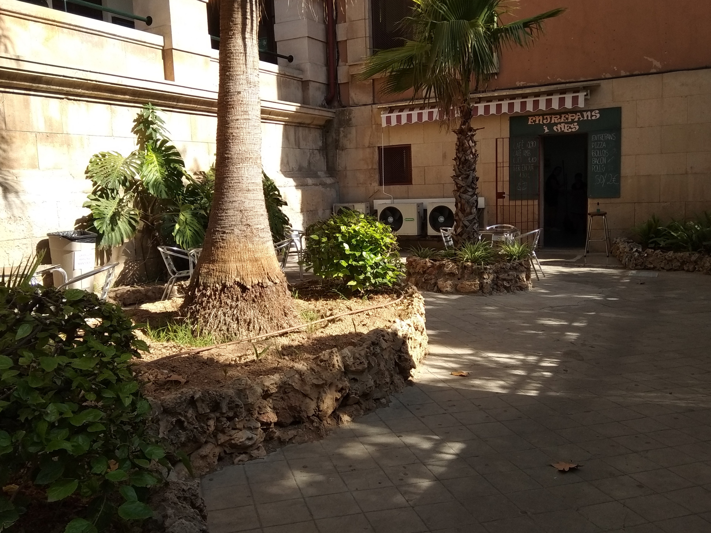
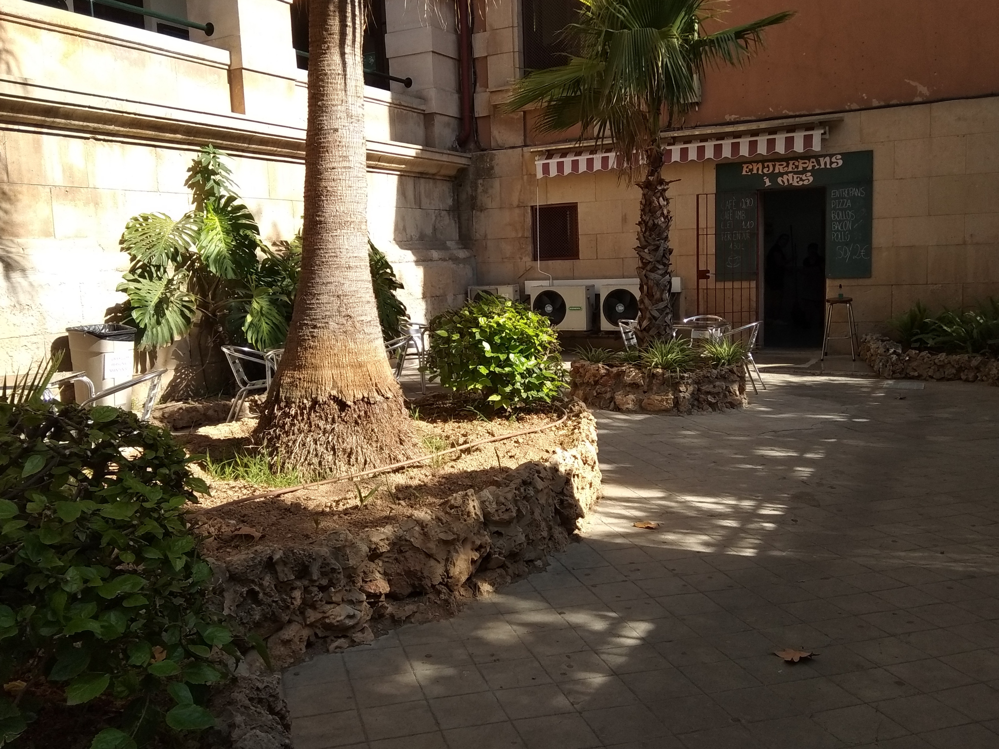

Cafeteria
Aquesta és la cafeteria de l'Institut de Ramon Llull, es espaiosa i compta amb una sala de professors.

Aquesta és la cafeteria de l'Institut de Ramon Llull, es espaiosa i compta amb una sala de professors.

Pots comprar tota mena de menjar, n'hi ha de tot.
Hi ha pizza, entrepans, pastes, gofres, llaminadures i altres coses més. Tot val al voltant de 2 euros com a màxim, aquesta força bo i adquisible
La cafeteria obre a les vuit del matí i està oberta fins que acaben les classes, a les dues del migdia.
Esta adevora de la cafeteria.